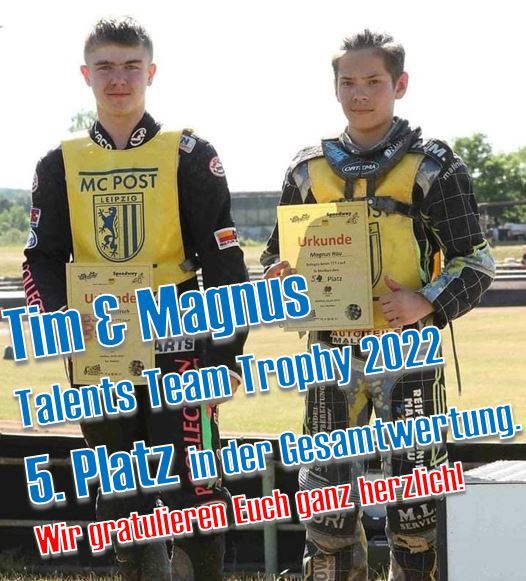
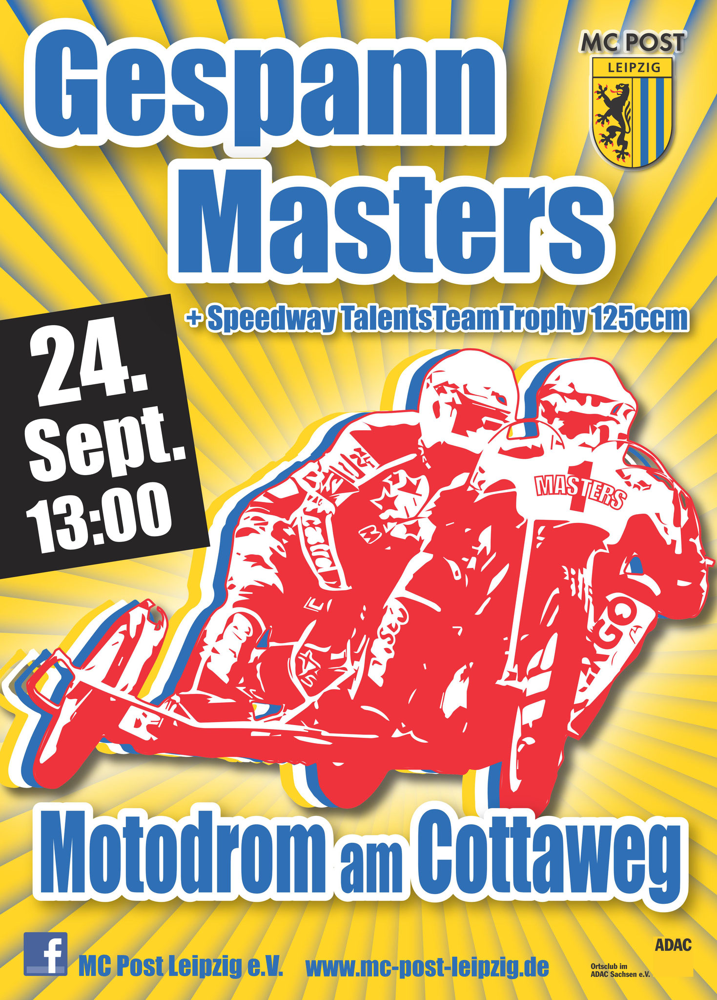
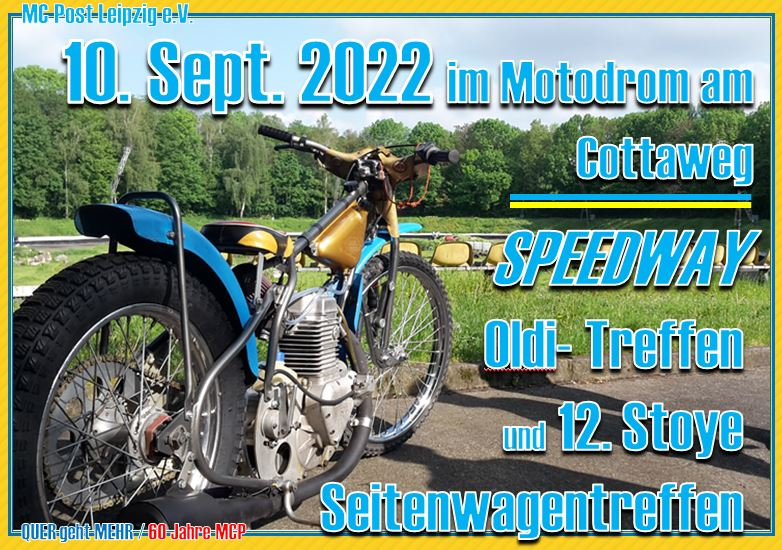
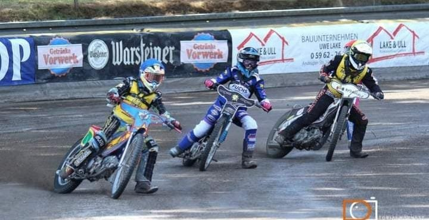
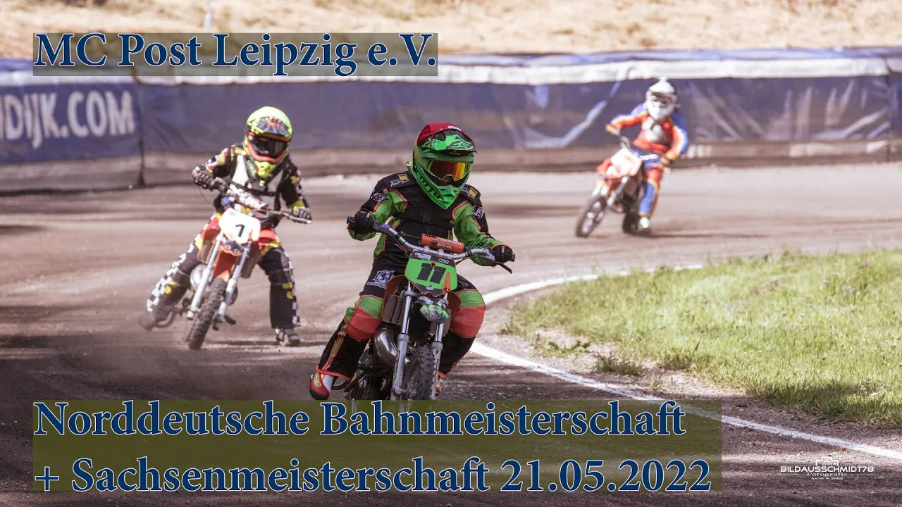

Am Sonntag, 2. Oktober fand der letzte Lauf der diesjährigen #TalentsTeamTrophy hoch im Norden beim MSC Brokstedt e.V. im ADAC statt. Leider musste diesmal Magnus allein antreten. Der Motor von Tim hatte eine Woche vorher in Leipzig das Zeitliche gesegnet. So schnell war leider kein…
Freude und Begeisterung im Doppelpack: Unser Speedway Oldi Herbsttreffen mit dem Treffen unserer Stoye Seitenwagen Freunde zu verbinden, ist eine super Sache. Wir freuen uns, allen Freunden des Speedway-Sports und der historischen Leipziger Seitenwagenmaschinen diesen Leckerbissen in entspannter Atmosphäre servieren zu können. Wir erwarten bei…
Liebe Freunde, ein kurzes knallgelbes Blitzlicht vom Cottaweg für EUCH: Am 30. Juli fand beim MSC Dohren e.V. auf der sehr kurzen und dadurch technisch besonders anspruchsvollen Bahn der fünfte Lauf der TTT statt. Unsere Junioren Magnus und Tim kamen sehr gut zurecht und belegten…
Wir wünschen allen Mitgliedern, Fans und Sponsoren schöne Sommerferien. Zum Video auf Youtube